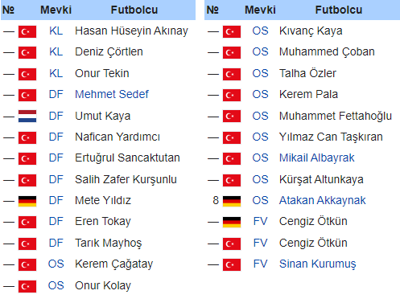

1997 yılında Çorum Belediyespor olarak kurulan Çorum FK 2011-2012 Sezonunda Bölgesel Amatör Lig'de şampiyon olarak Spor Toto 3. Lig'e yükselmiştir. Çorum Belediyespor 2012-2013 sezonunda ligi 12. bitirirken Çorumspor'un aynı sezon Bölgesel Amatör Lig'e düşmesinin ardından şehrin profesyonel liglerdeki tek takımı olmuştur. Çorum Belediyespor 2013-2014 sezonunu 7. 2014-2015 sezonunu ise 5. olarak tamamladı. Play-off Finalinde İstanbulspor'a 3-1 mağlup olarak Spor Toto 2. Lig'e Yükselmeyi başaramadı. 2015-2016 sezonunda ise play-off'a kalmasına rağmen yarı final'de elenmiştir. Çorum Belediyespor sadece futbol değil bisiklet, güreş, halter, judo, boks, tekvando, muay thai ve wushu gibi sporlar ve satranç gibi oyunlarda da boy göstermektedir.16 Haziran 2014 tarihinde yapılan genel kurulda kulübün kuruluş renkleri olan mavi ve beyaz renkleri ile logosu değiştirilmiş, kırmızı ve siyah yeni renkler olarak kabul edilmiştir. Aralık 2018'de takımın ismi Yeni Çorumspor oldu. 2018-19 3. Lig 3. grupta yer alan Yeni Çorumspor Fahrettin Sayhan ile başladığı sezonda, 5. haftanın ardından Mehmet Aurelio, 19. haftanın ardından Ersin Küçükoğlu ve 28. haftanın ardından Bahri Kaya yönetiminde ligde mücadele etti. 34 maçta 15 galibiyet, 7 beraberlik ve 12 mağlubiyet aldı. 52 puan toplayarak grubunu 5. tamamladı ve play-off oynamaya hak kazandı. Play-off yarı finalinde Kocaelispor'u 0-1 ve 3-0'lık maçlar sonucunda eledi. Adana 5 Ocak Fatih Terim Stadyumunda oynanan final maçında Serik Belediyesporla karşılaşan Yeni Çorumspor, normal süresi ve uzatmaları 1-1 biten maç sonunda yapılan penaltı atışları sonucunda 4-2 yendi. Yeni Çorumspor 7 sezon mücadele ettiği 3. Ligden tarihinde ilk kez 2. Lig'e yükseldi. Aralık 2019'da kulübün adı bir kez daha değişerek Çorum Futbol Kulübü oldu.
| Güncel Kadro |
|---|
|  |